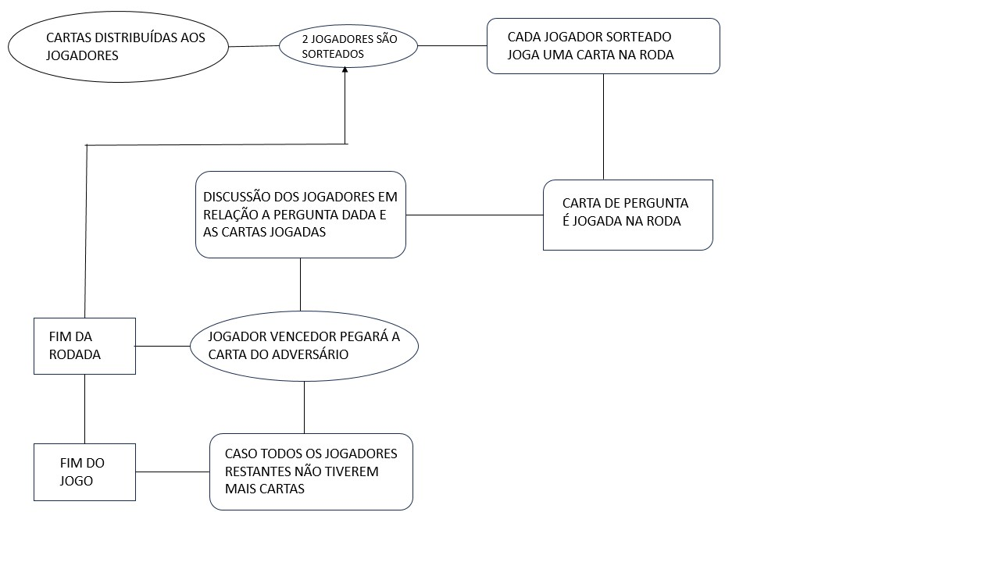

Cada jogador deverá pegar um número de cartas (que pode ser definido pelos proprios jogadores), dois jogadores devem ser sorteados e então devem jogar uma das figuras históricas sorteadas na mesa. Após isso devem pegar uma carta de pergunta (as azuis) e a ler. O objetivo dos jogadores é debater qual das personalidades é a mais provável de se dar bem na situação da carta de pergunta. Os jogadores devem entrar em consenso para saberem quem ganhou a rodada. O vencedor da rodada fica com a carta de figura histórica do outro, no final das rodadas, o jogador com mais cartas vence.
Este caso de uso pode ajudá-lo a entender melhor:
